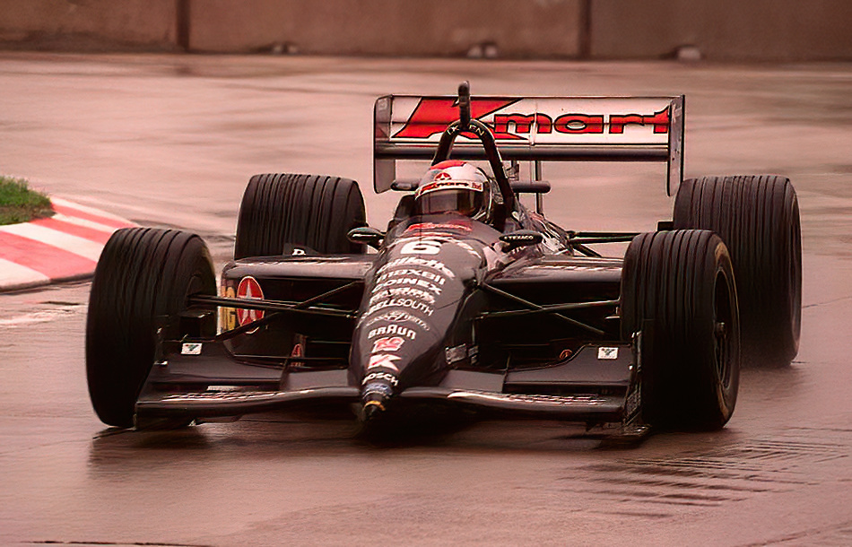
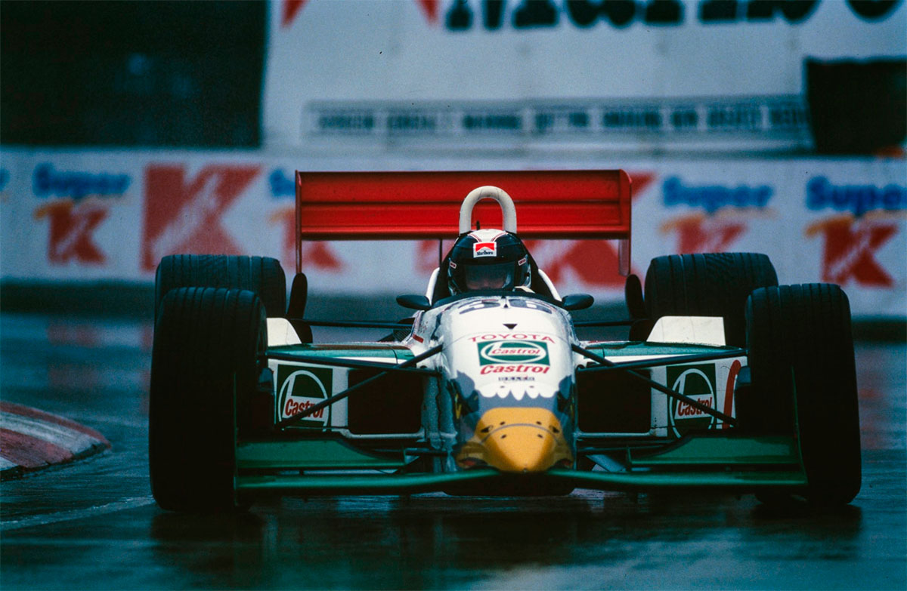
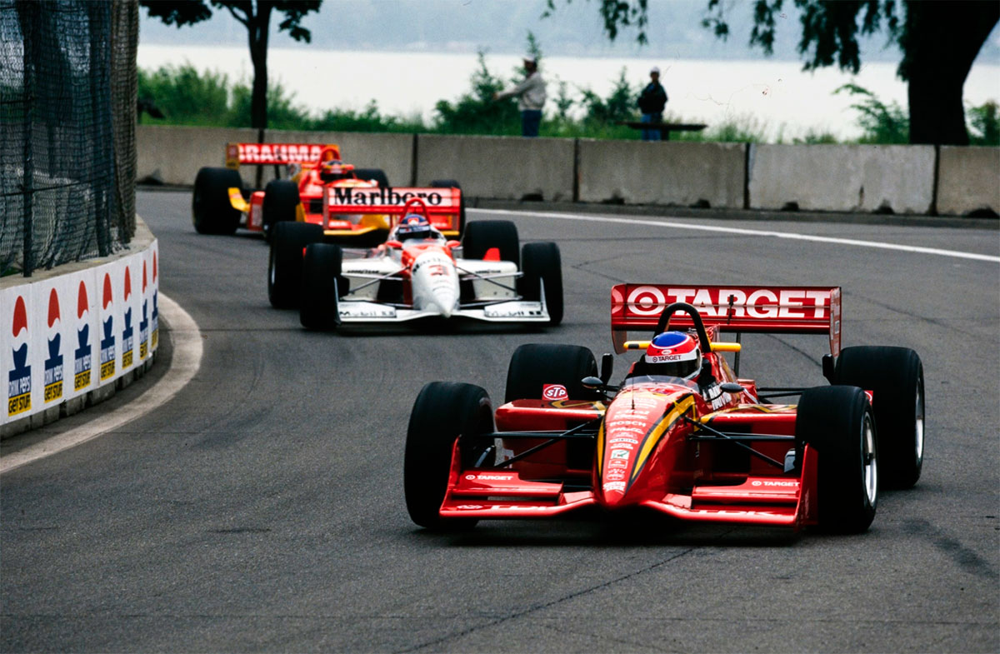
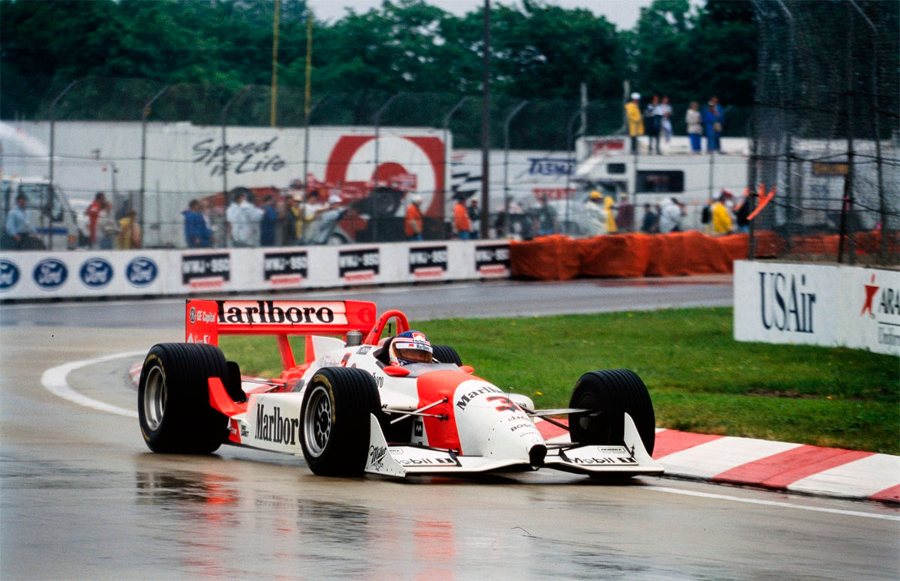
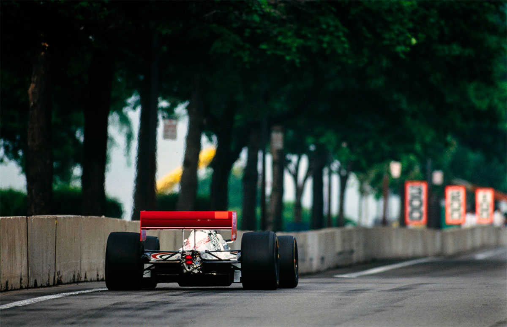
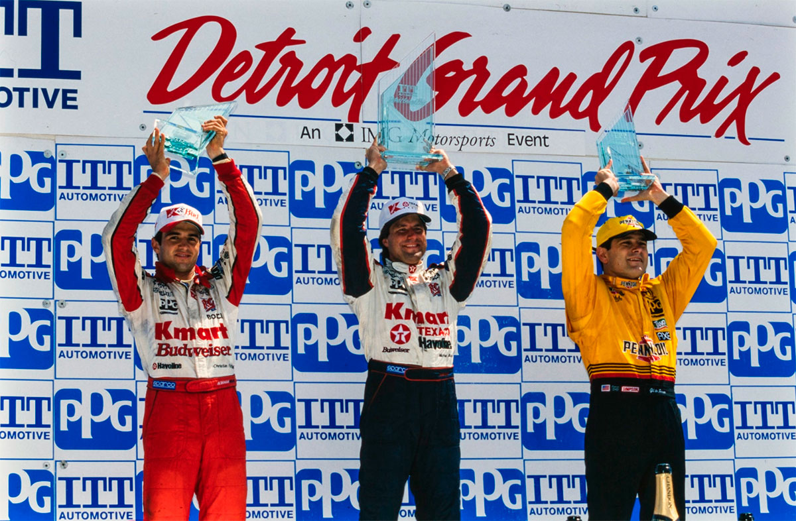

Detroit - 10/06/1996
ANDRETTI ENTRA NA BRIGA

Fittipaldi liderou grande parte da corrida mas errou e foi ultrapassado por Michael Andretti no final da corrida em Belle Isle. Líderes fracassam e campeonato fica mais equilibrado.
Jeremy Shaw
Christian Fittipaldi derrapou sutilmente, e isso foi a diferença entre a vitória e a derrota na agitada corrida ITT Automotive Detroit Grand Prix. O brasileiro de 25 anos demonstrou excelente controle do carro enquanto liderava com autoridade nas primeiras voltas, com chuva, no seu Lola-Ford Cosworth XD. Ele continuou a dominar após a chuva cessar e o perigoso Belle Isle Raceway secar. No entanto, o carro idêntico de Michael Andretti, o experiente colega de equipe de Fittipaldi da Newman/Haas, permaneceu sempre perto enquanto a corrida se aproximava do final. Na volta 66, logo após a corrida ter sido retomada seguindo uma das várias situações de bandeira amarela, Fittipaldi freou tarde demais na Curva Quatro. Andretti não precisou de mais do que isso. Enquanto Fittipaldi perdeu velocidade, o sempre oportuno americano aproveitou a oportunidade e acelerou em direção à bandeira quadriculada final. "Eu realmente sinto muito por Christian porque ele estava fazendo um excelente trabalho," elogiou Andretti. "Ele merecia vencer esta corrida. Eu estava tentando ser paciente, e felizmente a corrida veio para mim." Para seu crédito, Fittipaldi não ficou lamentando. "Michael venceu de forma honesta e justa", afirmou. "Optamos por um acerto completo para chuva, já que choveu durante toda a manhã, e quando secou, as coisas ficaram mais difíceis para mim. Mas estou feliz. Foi um grande dia para a equipe." Assim como para a Ford Cosworth, Lola e Goodyear. Em contrapartida, não foi um grande dia para a Firestone, já que seus pneus foram totalmente superados na pista molhada.
QUALIFICAÇÕES
A primeira sessão de treinos na manhã de sexta-feira não foi indicativa do que aconteceria nas qualificações. Gil de Ferran liderou o treino com o Reynard-Honda de Jim Hall, seguido pelo Reynard-Mercedes de Bobby Rahal, o Lola-Ford de Christian Fittipaldi e o Reynard-Ford de Robby Gordon. Embora não fosse incomum ter quatro combinações diferentes de chassis e motores, era interessante notar que todos estavam equipados com pneus Goodyear. No entanto, André Ribeiro, que estabeleceu o ritmo nos primeiros minutos, falhou na metade final da sessão depois de roçar o muro com o Lola-Honda de Steve Horne. À tarde, Ribeiro fez uma recuperação impressionante, garantindo a pole provisória e recompensando Steve Ragan e sua equipe, bem como a Firestone. Ribeiro voltou a liderar no sábado de manhã, seguido por Adrian Fernández. Na última sessão de qualificação, nenhum carro da Tasman conseguiu igualar o tempo de Scott Pruett, que na sua 82ª prova na Indy Car, superou todos os problemas para garantir a sua sensacional primeira pole position no Lola-Ford de Pat Patrick. "Foi uma boa investida, um verdadeiro edificador de confiança", afirmou um encantado Pruett, que na sexta-feira havia ficado em 15º lugar depois de experimentar uma rodada na pista e um breve incêndio no pit-lane. "O carro tem estado bem. Ainda precisamos melhorar nas lombadas - tal como toda a gente." Ribeiro sentiu que a subida da temperatura arruinaria suas esperanças de manter a pole. "Tivemos que ajustar o carro para essas condições", explicou ele, "e demoramos muito a ajustá-lo perfeitamente. Mas então os pneus já passaram do seu melhor." Fernández manteve sua recente melhoria para ser o terceiro no grid, enquanto Parker Johnstone também fez um excelente salto para o quarto lugar no Reynard-Honda da Brix Comptech. Alex Zanardi completou a hegemonia da Firestone nas cinco primeiras posições, enquanto Christian Fittipaldi, sexto, foi o melhor com Goodyear.
O sábado trouxe uma reviravolta completa na situação, já que os pneus Firestone pareciam ter uma vantagem significativa no clima seco. No entanto, o dia da corrida começou miserável, com chuva forte. O Belle Isle Raceway permaneceu coberto por nuvens baixas, e as condições meteorológicas instáveis criaram um cenário de incerteza. Fittipaldi deu o tom para a tarde ao realizar confortavelmente o melhor tempo na meia hora do warm-up. Ele foi seguido por Bobby Rahal, Al Unser Jr., Gil de Ferran, Mark Blundell e Robby Gordon. Os dois carros Eagle-Toyota de Juan Fangio II e P.J. Jones fizeram a melhor apresentação até o momento, ficando em 13° e 16°, respectivamente. Todos eles usavam pneus Goodyear Eagle para chuva. O mais rápido com pneus Firestone foi Greg Moore, que ficou em modesto 14° lugar, mais de 4 segundos atrás de Fittipaldi. A precipitação cessou a tempo da largada às 13h15, mas o Comissário-Chefe da Indy Car Wally Dallenbach ainda tomou a decisão sensata de largar o pelotão de 26 carros numa única fila no estreito e escorregadio circuito de 3,8 km, que é limitado por muros de cimento.

Scott Pruett aproveitou sua primeira pole position e largou na frente de André Ribeiro na traiçoeira Curva Um. No entanto, os principais concorrentes com pneus Goodyear já estavam pressionando. Fittipaldi liderou o caminho, saindo de sexto lugar no grid e chegando em segundo no final da primeira volta. O Kmart/Budweiser ultrapassou facilmente o idêntico Lola-Ford de Pruett antes da Curva 13 na segunda volta e começou a estabelecer uma clara vantagem na frente do pelotão. De Ferran o seguiu rapidamente em segundo, na frente de Paul Tracy, que saltou de 11º para terceiro em apenas três voltas. Robby Gordon também estava na onda, tendo ultrapassado Parker Johnstone e Michael Andretti em uma manobra arrojada na Curva Dez. Depois de desalojar Pruett do quarto lugar na quarta volta, Gordon freou tarde no final de The Strand e foi direto para a barreira de pneus, abandonando a corrida. O incidente de Gordon levou à primeira entrada do carro de segurança na pista. A vantagem de Fittipaldi foi imediatamente apagada, mas não por muito tempo. O brasileiro se afastou novamente na relargada, liderando com uma vantagem de um segundo por volta sobre De Ferran. Na 20ª volta, com a pista começando a secar, a vantagem de Fittipaldi estabilizou em seis segundos. Enquanto isso, De Ferran estava sob pressão crescente de Tracy e Andretti. Os quatro primeiros colocados tinham mais de 25 segundos de vantagem sobre Al Unser Jr., que ultrapassou Pruett na 18ª volta e rapidamente se afastou. Logo depois, as bandeiras amarelas foram novamente mostradas depois de Moore ter tentado ultrapassar Ribeiro pelo nono lugar, resultando em uma rodada sincronizada na Curva 13. O foco mudou-se para o pit-lane, pois todas as equipes aproveitaram para trocar para pneus de seco e reabastecer. Fittipaldi retornou à liderança, enquanto Andretti subiu para segundo depois de aproveitar a parada ultra-rápida dos mecânicos de Tim Bumps e a rodada rápida de De Ferran na saída do pit-lane. “Quando saí do pit-lane, esqueci de desligar o limitador de velocidade,” admitiu De Ferran timidamente. “Quando percebi, apertei o botão, mas acelerei demais e fiquei com muita potência, por isso acabei rodando. Foi um erro bobo.”

De Ferran reassumiu a quarta posição, à frente de Unser e Rahal. Na sequência, vinham Pruett e Fernandez, que continuava sendo o melhor classificado entre aqueles com pneus Firestone Firehawks. Andretti rapidamente percebeu que em uma pista como a Belle Isle, conhecida por sua falta de oportunidades de ultrapassagem, teria que pressionar muito para passar seu companheiro de equipe. Por isso, estabeleceu um ritmo confortável e ficou alguns segundos atrás. Seu ritmo era rápido o suficiente para Tracy rapidamente ficar longe de seus espelhos. "Meu carro estava ajustado para a chuva", explicou Tracy, "e assim que a pista secou, o equilíbrio piorou. Tudo o que pude fazer foi segurar". Dois pequenos erros na 41ª volta permitiram que De Ferran e Rahal ultrapassassem Tracy, que por sua vez se viu pressionado por Unser. Mas, em vez de facilitar a ultrapassagem para seu companheiro de equipe, Tracy lutou para manter sua posição. Ele até se recusou a ceder espaço depois de abrir na Curva Três na 47ª volta, o que permitiu que Unser se colocasse ao seu lado antes das curvas seguintes. Não foi uma manobra sensata. Unser, pela trajetória externa, que ainda estava molhada, bloqueou as rodas antes de escorregar sobre o bico de Tracy diretamente até a barreira de pneus. Não ficou feliz. "Quando a pista começou a secar, meu carro ganhou vida", disse Unser. "Estava fazendo voltas melhores do que Paul e tentei passá-lo volta após volta. É uma pena brigar tanto com alguém no meio da corrida, especialmente quando somos companheiros de equipe."

Tracy enfrentou uma tarde repleta de incidentes. Na Curva Sete, ele tocou rodas com Pruett e acabou batendo na barreira de pneus, abandonando a corrida. O acidente também causou danos na suspensão dianteira do Lola de Pruett, que acabou cometendo um erro enquanto pressionava De Ferran pela terceira posição nas voltas finais. Pruett teve sorte, conseguiu tirar o carro da barreira de pneus e terminou em décimo, garantindo três pontos. Rahal também não teve sorte e acabou batendo na barreira de pneus depois de desviar um pouco da trajetória na freada para a Curva 13. “Sinto-me mal,” disse Rahal, “porque a equipe me deu um bom carro e mereciam mais do que isso. Tivemos uma oportunidade de ouro de obter pontos preciosos.” As desistências de Unser, Tracy e Rahal, juntamente com o atraso de Pruett, garantiram a De Ferran uma ascensão fácil para o terceiro lugar. “Estou feliz e não tão feliz,” disse o brasileiro. “Não fui suficientemente rápido para alcançar os dois primeiros, mas espero que este seja o início de um retorno ao campeonato.” Fernández também fez uma boa corrida em condições difíceis e terminou em quarto no Tecate/Quaker State Lola-Honda. O mexicano foi seguido por Eddie Lawson e Stefan Johansson, que fizeram progressos espetaculares, vindo de modestas posições no grid. Raul Boesel também teve um bom desempenho e assegurou um bom retorno para o Brahma Sports Team de Barry Green. Mas talvez o esforço mais impressionante tenha sido o de P.J. Jones, que levou seu Eagle e foi recompensado com seus primeiros pontos na IndyCar para a Toyota. O líder do campeonato, Jimmy Vasser, teve outro fim de semana difícil, assim como seu colega de equipe, Alex Zanardi. Ambos tiveram acidentes durante os treinos, enquanto o veterano engenheiro de pista Morris Nunn sofreu um pequeno acidente nas ruas de Detroit. O azar continuou quando os dois carrinhos da equipe expiraram. “As coisas só podem melhorar,” previu o chefe de equipe Tom Anderson. A Newman/Haas, por outro lado, experimentou o extremo oposto da escala emocional. “Foi uma grande corrida para nós,” disse Andretti depois de assegurar sua terceira vitória nas últimas quatro corridas. “Vencer na cidade natal da Kmart é ótimo para nós, e uma dobradinha é ainda melhor.”
Suspensão de Andretti levantada
Michael Andretti tem motivos de sobra para celebrar após vencer em Detroit, especialmente porque essa terceira vitória da temporada o colocou em terceiro lugar no campeonato, a apenas quatro pontos de Al Unser Jr. e a 27 do líder Jimmy Vasser. "Encarei esta corrida sabendo que precisamos de pontos para o campeonato", disse Andretti. "Quando estava atrás do Christian, preparava-me para manter o segundo lugar. Ele foi superior todo o fim de semana, por isso tenho pena que ele não tenha ganho a corrida. Ele merecia. Mas fomos nós que vencemos. Talvez a minha sorte tenha mudado." "Têm sido umas semanas impressionantes", continuou. "Primeiro, ganhei na minha pista natal em Nazareth. Depois na de Carl Haas, meu co-proprietário de equipe, em Milwaukee. E agora na pista da Kmart. O único problema é quando corremos fora de casa!" A recente sequência de sucessos de Andretti, aliado ao seu comportamento exemplar, levou o Comissário-Chefe da IndyCar Wally Dallenbach a anular a pena suspensa que lhe fora imposta após uma sucessão de incidentes com outros pilotos nas primeiras corridas. "Ele tem sido um aluno exemplar desde que está sob pena suspensa, por isso está livre", disse Dallenbach, ele próprio um antigo vencedor da IndyCar. Andretti, porém, brincou que não estava muito preocupado de qualquer maneira: "Ganhei três das quatro corridas desde que estou sob pena suspensa", disse. "Talvez deva continuar sob pena suspensa."

Jones marca pontos para a Eagle
A chuva, como diz o ditado, é um grande nivelador no automobilismo. P.J. Jones certamente aproveitou o tempo desfavorável durante a primeira parte da corrida para conquistar pontos, levando pela primeira vez o Eagle-Toyota de Dan Gurney aos pontos. Assim como seu pai, Parnelli Jones, vencedor da Indianapolis 500 de 1963, P.J. começou a correr na terra. Ele ainda corre ocasionalmente nas categorias midget, simplesmente porque gosta de experimentar o prazer da competição. Os primeiros anos de P.J. no esporte foram repletos de incidentes, graças à sua atitude despreocupada. Muitas vezes, Jones examinava pesarosamente um carro de corrida deformado, geralmente com um largo sorriso no rosto. Mas sob a orientação especializada do pai e do igualmente respeitado Dan Gurney, Parnelli Jr. amadureceu imensamente depois de ingressar em 1991 na equipe All American Racers de Gurney. Ele prontamente aceitou o status de número dois juntamente com Juan Manuel Fangio II, o sobrinho do pentacampeão da Fórmula 1, que tinha três anos de maioridade na equipe, e desinteressadamente ajudou Fangio, AAR e a Toyota a vencerem dois campeonatos consecutivos IMSA GTP. Jones aguardou pacientemente pela sua oportunidade para pilotar um carro da Indy. Fez uma fraca estreia em Milwaukee, mas mal a chuva começou a cair em Detroit, ele sabia que a desvantagem do seu motor Toyota RV8A com menos potência seria minimizada. O piloto de 27 anos mal podia disfarçar a sua alegria. De fato, Jones ultrapassou na primeira volta seu colega Fangio, Jeff Krosnoff e o líder do campeonato Jimmy Vasser. Depois, nas primeiras 20 voltas, chegou em Eddie Lawson, Maurício Gugelmin, Raul Boesel, Emerson Fittipaldi e Roberto Moreno. Claro, quando a pista secou, Jones e seu Eagle-Toyota não puderam bater a oposição mais forte. Mas, naquele momento, ele já havia conquistado pontos, onde permaneceu o resto da tarde. E merecidamente.
